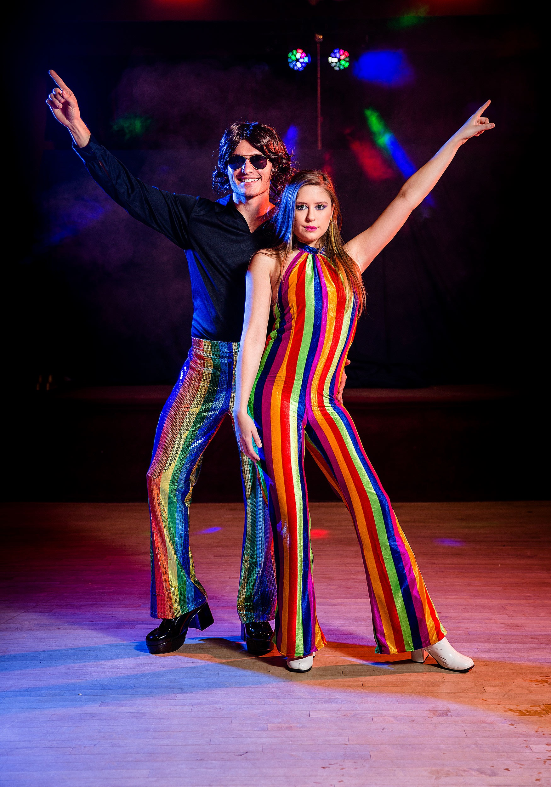

What is Disco?
Disco is a genre of dance music that emerged in the early 1970s, gaining widespread popularity throughout the decade and peaking in the late '70s before experiencing a decline in the early 1980s. Known for its infectious rhythms, lush production, and heavy use of orchestration, disco became synonymous with nightlife, dance clubs, and a vibrant cultural movement that celebrated freedom of expression and diversity.
Origins and Influences
Funk: The syncopated bass lines and groove-heavy structure of funk music, pioneered by artists like James Brown and Sly & the Family Stone, laid the groundwork for disco’s rhythmic complexity.
Soul: Many disco vocals, with their rich, emotive quality, can be traced back to the traditions of soul music. The soul stars of the '60s and '70s, like Marvin Gaye and Aretha Franklin, influenced the emotive style of disco singers.
Latin and Afro-Cuban music: The use of congas, bongos, and syncopated rhythms in disco tracks, especially those played in clubs, came from Latin and Afro-Cuban musical traditions, which brought a global flavor to the genre.
Disco Fashion!
Funk: The syncopated bass lines and groove-heavy structure of funk music, pioneered by artists like James Brown and Sly & the Family Stone, laid the groundwork for disco’s rhythmic complexity.
Soul: Many disco vocals, with their rich, emotive quality, can be traced back to the traditions of soul music. The soul stars of the '60s and '70s, like Marvin Gaye and Aretha Franklin, influenced the emotive style of disco singers.

Flamboyant accessories: Large sunglasses, wide belts, and gold jewelry were common, as were headbands and scarves worn as part of the complete disco look.
Go back to the homepage!